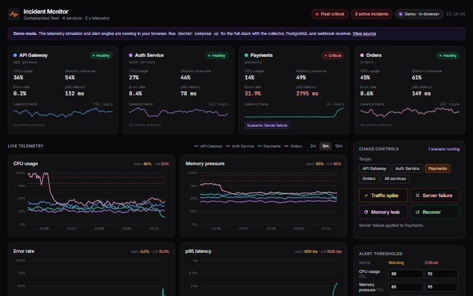
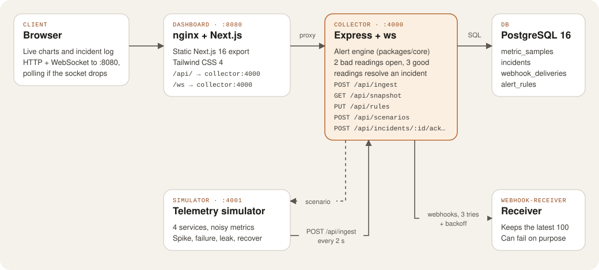

Work / Case study 02
Incident Monitoring Dashboard
A containerised observability stack: simulated services send telemetry, an alert engine opens and resolves incidents, and a live dashboard shows it all as it happens.
- Role
- Solo: every service, the dashboard and CI
- When
- Built Oct 2026
- Size
- 5 containers, 4 tables, 15 unit tests + a full-stack smoke test
- Hosting
- Docker Compose locally, in-browser demo on GitHub Pages

The problem
I wanted to understand what happens between “a server is struggling” and “someone gets paged”. Real production traffic wasn’t available to me, so I built the whole loop myself: services that produce metrics, a collector that decides when something is wrong, a notification channel, and a dashboard an on-call engineer would watch.
The hard requirement I set was that it had to behave calmly. A monitoring tool that fires on every blip gets ignored, so incidents should open only for real problems and close only when things have actually recovered.
My role
A personal project, built alone. I designed the Compose stack, wrote the simulator, the collector and its alert engine, the webhook receiver, the Next.js dashboard and the CI pipeline.
Stack
- Services
- Node.js: a telemetry simulator, an Express collector with a WebSocket server (
ws), and a webhook receiver - Database
- PostgreSQL 16
- Dashboard
- Next.js 16 static export with Tailwind CSS 4, served by nginx
- Shared code
packages/core: the simulator and alert engine, used by the services and the browser demo- Testing
- Node’s built-in test runner, plus a smoke test against the running stack
- Delivery
- Docker Compose, GitHub Actions, GitHub Pages
Architecture
Five containers start with one docker compose up. The browser only ever talks to nginx, which serves the dashboard and proxies /api and /ws to the collector, so there is one origin and no CORS setup.

metric_samples (pruned after RETENTION_MINUTES), incidents, webhook_deliveries and alert_rules. Open the diagram full size.
The hard part: alerting that doesn’t cry wolf
My first alert engine opened an incident whenever a reading crossed a threshold. One noisy CPU spike meant one incident, and a metric hovering around the line opened and closed incidents every few seconds.
The fix is hysteresis: different rules for opening and closing. An incident opens after two consecutive readings over the warning threshold, escalates to critical as soon as one reading crosses the critical threshold, and resolves only after three consecutive readings back under the warning line. Only one incident per service and metric can be open at a time.
packages/core/src/alerts.js (shortened)
if (level) {
t.breaches += 1;
t.clears = 0;
if (!open && t.breaches >= breachSamples) { // 2 bad readings
t.incident = openIncident(sample.service, metric, level, value, now);
events.push({ type: 'opened', incident: { ...t.incident } });
} else if (open && level === 'critical' && open.severity === 'warning') {
open.severity = 'critical';
events.push({ type: 'escalated', incident: { ...open } });
}
} else if (open) {
t.breaches = 0;
t.clears += 1;
if (t.clears >= clearSamples) { // 3 good readings
open.status = 'resolved';
events.push({ type: 'resolved', incident: { ...open } });
}
}Because the engine is a pure function of the readings it sees, it lives in a shared package. The collector runs it on real ingested data, and the public demo runs the very same code in the browser.
“Running” isn’t “ready”
The collector kept crashing on start-up because it connected before PostgreSQL could accept connections. Listing services in order doesn’t help. Every container now has a health check, and Compose starts them with depends_on: condition: service_healthy in order: database, webhook receiver, collector, then the simulator and dashboard. The collector also restores open incidents and saved thresholds from the database after a restart, and retries each webhook up to three times with a growing delay, logging every attempt in webhook_deliveries.
What I tested
- 15 unit tests for the shared core: an incident opens only after consecutive breaches, a single spike opens nothing, warnings escalate to critical, a breach during the clear window resets the countdown, and open incidents are restored after a restart. On the simulator side, normal traffic stays quiet while the failure, spike and memory-leak scenarios raise the right alerts.
- A full-stack smoke test (
scripts/smoke-test.mjs) that talks to the running containers through the nginx proxy: it checks the stack is up, that the WebSocket streams live samples, that a server failure raises critical incidents, that the webhook reaches the receiver, that an incident can be acknowledged, that recovery resolves everything and that invalid thresholds are rejected.
The unit tests prove the logic. The smoke test proves the containers actually talk to each other, which is where a multi-service app tends to break.
How it ships
- CI: GitHub Actions runs on every push to
mainand every pull request. The first job runs the core tests, installs the services and builds the dashboard. The second builds every image, starts the stack withdocker compose up --wait, runs the smoke test, prints the container logs if anything fails and tears it all down. - Demo: a Pages workflow builds the dashboard in demo mode (
npm run build:demo) and deploys it on every push tomain. In that build the simulator and alert engine run in the page, so anyone can trigger chaos without Docker. - Hosting: five always-on containers don’t fit a free tier, so the full stack runs locally with one command and the public version is the in-browser demo.
What I’d do next
- Add authentication to the endpoints that change state (
PUT /api/rules,POST /api/scenarios, acknowledging incidents). Today anyone who can reach the collector can change them, which is fine locally but not on a shared server. - Downsample old samples instead of only deleting them after the retention window, so the charts can show longer history.
- Add tests for the collector’s Postgres store, which is currently only covered by the smoke test.